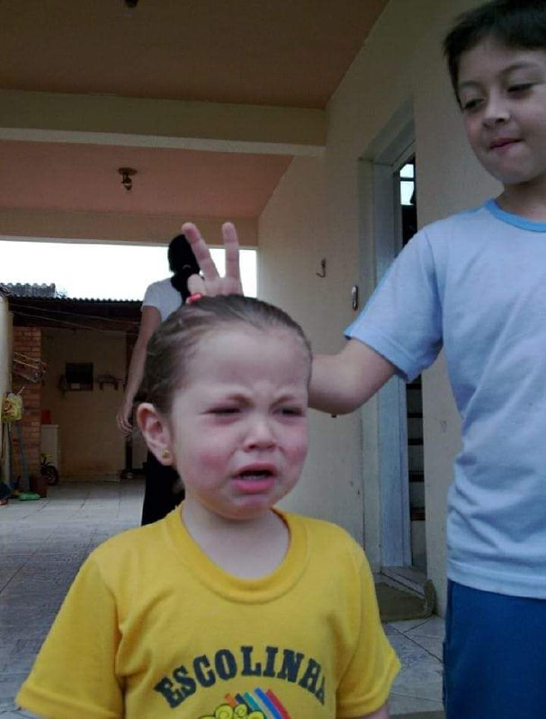

Para Lyara Medeiros
Acredito que um dos principais marcos que dão início à fase adulta é descobrir que as coisas, na maioria das vezes, não são sobre nós mesmos. Quando crianças, temos a impressão de que somos os protagonistas do mundo e que todas as outras pessoas existem como complemento do nosso “eu”. Meu pai, minha mãe, minha avó. A verdade é que leva tempo e um esforço considerável para enxergar essas pessoas, com as quais convivemos a vida inteira, para além da relação que elas têm conosco. Um considerável nível de maturidade é exigido para entender que essas pessoas tão próximas possuem sonhos dos quais não participamos, medos que não compreendemos e histórias que não nos foram confidenciadas.
Dito isso, foi só muito recentemente que fui capaz de enxergar além do papel que tu desempenhas para mim, minha irmã. Não sei dizer ao certo o momento em que te enxerguei como te vejo agora, mas quero que tu saibas que, para mim, tu és gigante. Assisto com admiração às tuas realizações e à tua coragem de viver a vida do teu jeito. Pois, afinal, se não somos os protagonistas do mundo, que sejamos então os protagonistas de nossa própria história. Te desejo um feliz aniversário! Que nunca te falte a ousadia de buscar o que te faz feliz. Espero, cada vez mais, te ver crescer para ser, não o que esperamos que tu sejas, mas o que de fato tu és.
Com amor e admiração,
Christian Medeiros
27/01/2025